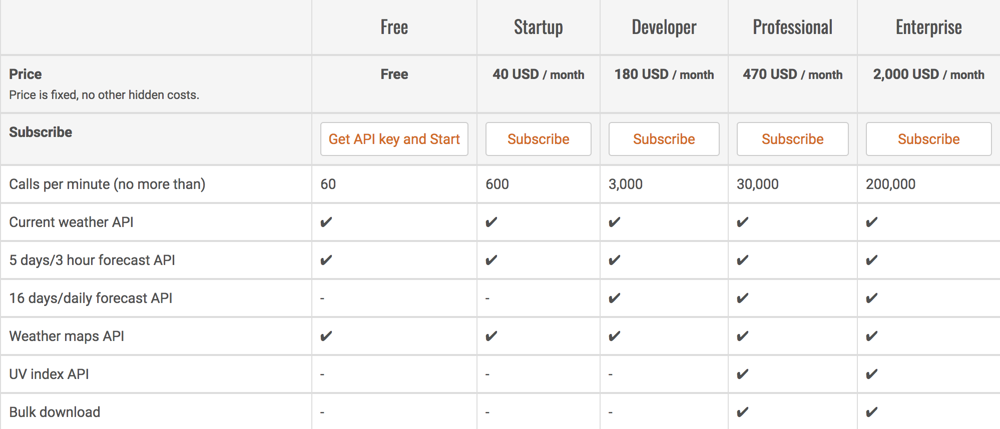
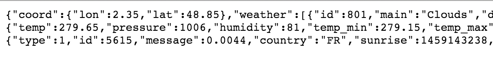
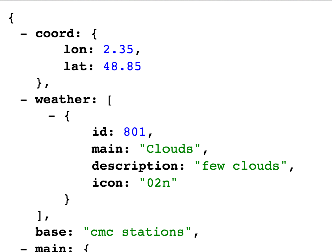
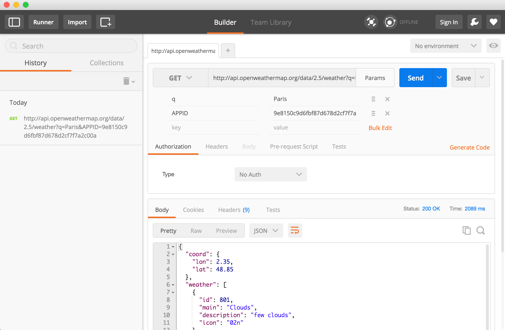

H2 - P2021
Développement web
Cours 18
- github : https://github.com/brunosimon/hetic-p2021
- site : http://bruno-simon.com/hetic/p2021/
- contact : bruno.simon@hetic.net
PHP
API
Application Programming Interface
Définition général :
Ensemble de classes, méthodes et fonctions d'un service
Définition web :
Interface de communication d'un service web accessible par protocole HTTP
Si vous avez créé un site et que vous souhaitez ouvrir vos données sans avoir à fournir trop d'accès et en gardant le contrôle sur les flux, vous pouvez mettre en place une API
Il en existe de très nombreuses et tous les grands en ont une :
Les petits aussi :
- OpenWeatherMap (Météo)
- LastFM (Musique)
- UK Police (UK Police)
- NASA (Astronomie)
- Football-data (Football)
- Open Data Paris (Paris)
- Brewery DB (Bières)
- Poké API (Pokemons)
- Adorable Avatars (Image d'avatar)
- RoboHash (Image d'avatar)
- Et bien d'autres
Les API permettent de faire plein de choses, mais on les utilise en général pour récupérer des données
Formats
Les données renvoyées peuvent être dans différents formats
- JSON
- XML
- Images
- Fichiers
- ...
Documentation
- Les API sont en général accompagnées d'une documentation
- Celles-ci ne sont pas toujours de qualité
- Explorez intégralement la documentation avant de commencer
- Si vous développez une API, ne négligez pas la documentation
Limitations
- La majorité des API possède des limites. Cela permet d'empêcher les abus et une surcharge du serveur.
- Renseignez-vous sur ces limites et minimisez le nombre d'appels
- Une bonne astuce consiste à utiliser du cache
Communiquer avec une API
Nous allons prendre comme exemple l'API de météo OpenWeatherMap
Comme de nombreuses API, celle-ci nécessite de s'enregistrer afin d'optenir une API KEY.
Il faudra envoyer cette API KEY avec chaque requête
API KEY : 9e8150c9d6fbf87d678d2cf7f7a2c00a
L'API de OpenWeatherMap est gratuite jusqu'à certaines limites

Communiquer avec une API
Dans le navigateur
Puisque les API sont accessibles en HTTP via des URLs, on peut souvent les tester directement depuis n'importe quel navigateur
Tapez l'URL suivante dans votre navigateur
http://api.openweathermap.org/data/2.5/weather?q=Paris&APPID=9e8150c9d6fbf87d678d2cf7f7a2c00a

L'API de OpenWeatherMap renvoie du JSON
Pour formater le JSON dans Chrome, installez le plugin JSONView

En tapant des URL dans votre navigateur, vous ne pouvez envoyer que des requêtes en GET
Pour envoyer des requêtes en POST, DELETE, PUT, etc., nous pouvons utiliser des logiciels tiers


Avantages
- Gestion des paramètres
- Headers
- Historique
- Sauvegarde
- Organisation
- Testing
- ...
Communiquer avec une API
En JS
En JS natif compatible
// Instanciate request
var xhr = new XMLHttpRequest();
// Ready stage change callback
xhr.onreadystatechange = function()
{
// Is done
if(xhr.readyState === XMLHttpRequest.DONE)
{
// Success
if(xhr.status === 200)
{
var result = JSON.parse(xhr.responseText);
console.log('success');
console.log(result);
}
else
{
console.log('error');
}
}
};
// Open request
xhr.open('GET', 'http://api.openweathermap.org/data/2.5/weather?q=Paris&APPID=9e8150c9d6fbf87d678d2cf7f7a2c00a', true);
// Send request
xhr.send();
Avec jQuery
$.getJSON(
'http://api.openweathermap.org/data/2.5/weather?q=Paris&APPID=9e8150c9d6fbf87d678d2cf7f7a2c00a',
function(data)
{
console.log(data);
}
);
En JS natif ES6
fetch('http://api.openweathermap.org/data/2.5/weather?q=Paris&APPID=9e8150c9d6fbf87d678d2cf7f7a2c00a')
.then((response) =>
{
return response.json()
})
.then((result) =>
{
console.log(result)
})
Cette méthode utilise la fonction Fetch et les Promises avec quelques problèmes de compatibilité
Problèmes :
- Votre API KEY est visible et n'importe qui pourra la récupérer
- Ce sont les visiteurs qui vont faire les requêtes directement depuis leur navigateur avec leur connexion
- Pour 100 utilisateurs différents, la même requête sera exécutée 100 fois
Communiquer avec une API
En PHP
Avec CURL
// Instantiate curl
$curl = curl_init();
curl_setopt($curl, CURLOPT_URL, 'http://api.openweathermap.org/data/2.5/weather?q=Paris&APPID=9e8150c9d6fbf87d678d2cf7f7a2c00a');
curl_setopt($curl, CURLOPT_RETURNTRANSFER, true);
$result = curl_exec($curl);
curl_close($curl);
// Json decode
$result = json_decode($result);
// Show result
echo '';
print_r($result);
echo '
';
Avec file_get_contents
// Get content
$result = file_get_contents('http://api.openweathermap.org/data/2.5/weather?q=Paris&APPID=9e8150c9d6fbf87d678d2cf7f7a2c00a');
// Json decode
$result = json_decode($result);
// Show result
echo '';
print_r($result);
echo '
';
Attention, certains serveurs limitent l'utilisation de file_get_contents à des fichiers locaux
Avantages en PHP
- Possibilité de mettre en cache les requêtes
- Possibilité de sauvegarder les données dans une BDD
- Requêtes en général plus rapide
- Les visiteurs ne voient rien (API KEY)
Envoyer des données PHP au JS
Il arrive souvent que l'on ait besoin d'envoyer des données provenant du PHP vers le JS
Lorsqu'il y en a peu et que la donnée est liée au DOM, on peut toujours utiliser l'attribut data
<?php
$foo = 'bar';
?>
<div class="test" data-foo="<?= $foo ?>"></div>
<script>
const $test = document.querySelector('.test')
console.log($test.dataset.foo)
</script>
Mais lorsqu'il y a beaucoup de données il vaut mieux envoyer la donnée en JSON directement dans une variable.
Pour cela, nous utilisons la méthode PHP json_encode
<?php
$data = ['toto' => 'tata', 'active' => true, 'list' => ['a', 'b', 'c']];
?>
<script>
const data = <?= json_encode($data); ?>
console.log(data)
</script>
REST
Certaines API sont qualifiées de REST (Representational State Transfer)
- URI
- HTTP
- MIME types
- Liens de transition inter-ressource
URI
Dans une URL, il s'agit du chemin après le domaine : http://mon-api.com/ressource/categorie/3/id/1827
L'URI permet d'identifier la ressource et doit être bien prévue avec une architecture logique et compréhensible
HTTP
Dans le cadre d'une API Rest, le choix du protocole permet de définir l'action désirée.
Nous connaissons deux protocoles GET et POST, Il en existe deux autres principaux, PUT et DELETE
- GET : Récupérer une ressource
- POST : Ajouter une ressource
- PUT : Modifier une ressource
- DELETE : Supprimer une ressource
MIME Types
Les API peuvent renvoyer du JSON, des images, du HTML, des excel, etc.
Lorsque la donnée est renvoyée, elle doit être accompagnée d'un MIME Type permettant d'indiquer clairement le type
Liens de transition inter-ressource
L'API doit renvoyer des données en fournissant les URI permettant d'accéder aux autres données qui sont liées à la première
Si par exemple on récupère une catégorie et que celle-ci renvoie des ressources, les URI de ces ressources doivent être indiquée. Cela permet aux développeur de facilement aller récupérer les ressources liées.
Bonus
Moins officiellement, on considère une API comme REST dans ces deux conditions :
- ID : Chaque ressource est identifiée de façon unique avec un ID
- Stateless : Une URI doit toujours renvoyer la même donnée (sauf si celle-ci a été modifée). Il ne peut pas y avoir de flux d'actions.